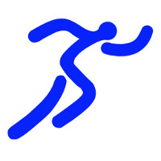
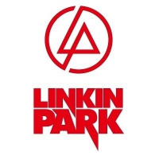
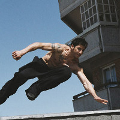

曲阜师范大学杏坛学院日照校区
E-mail：libook7@qq.com具有高度可塑性，热爱计算机，拥有黑客精神。有自己的学习方法，较强的远见、组织能力、应变能力和交流水平，有集体荣誉感与责任感，肯吃苦，擅长业务逻辑与实践创新。熟练使用C#.net、Java、PHP、HTML、Javascript、CSS等语言，熟练使用MySQL数据库管理系统、（喜爱）Linux操作系统、WinServer操作系统，掌握（神奇的）JQuery、EasyUI等架构，深入了解CMS，精通计算机软硬件维修与维护。曾是专业运动员。
2011/06 -- 2013/07
行业类别：政府/公共事业/非盈利机构 | 企业性质：事业单位 | 企业规模：500人 | 职位月薪：1000元/月以下
工作描述：
2010/06 -- 2010/09
行业类别：零售/批发 | 企业性质：民营 | 企业规模：100-499人 | 职位月薪：1000元/月以下
工作描述：
2010/06 -- 2010/09
行业类别：教育/培训/院校 | 企业性质：民营 | 企业规模：20-99人 | 职位月薪：1000元/月以下
工作描述：
2012/12 -- 2013/07
软件环境：WindowsServer2008、IIS7、TML、Spada拟合开发环境、XYDB
硬件环境：Intel Xeon E5540+4G内存+RAID0
开发工具：Chrome、EditPlus、gedit、Dreamweaver、BCompare
责任描述：
项目简介：
2012/05 -- 2012/12
软件环境：Windows+.Net4.0+MySQL
硬件环境：主流PC兼容机
开发工具：Microsoft Visual Studio 2010\2012
责任描述：
项目简介：
2011/06 -- 2011/09
软件环境：WAMP(Windows+Apache+MySQL+PHP)
硬件环境：主流PC兼容机
开发工具：Adobe Dreamweaver CS5;PHPMyAdmin
责任描述：
项目简介：
2010/09-- 至今
2006/06--2006/08
曲阜师范大学计算机科学学院文艺部副部长;
曲阜师范大学日照校区学团网络技术部副部长;
河北玉田一中学生会组织部副部长;
河北玉田一中学生会宣传部部长
2011/09
| Linux操作系统 | 熟练 | 72个月 |
| JQuery-EasyUI架构的使用 | 熟练 | 4个月 |
| JAVASE程序设计 | 良好 | 10个月 |
| PHP+Apache+MySQL程序设计 | 熟练 | 20个月 |
| C#.NET程序设计 | 熟练 | 13个月 |
| 维修与维护 | 精通 | 120个月 |
齐鲁软件大赛三等奖。
运动会800米与100米接力冠军。
院级演讲比赛三等奖和人气奖。
高中英语演讲比赛校级一等奖。
高中英语歌曲大赛校级一等奖。
  
成为优秀的架构师
MBTI倾向示意图(类型：ENTJ 总倾向：48.6) |
||
| 外向（E） |
|
（I）内向 |
| 实感（S） |
|
（N）直觉 |
| 思考（T） |
|
（F）情感 |
| 判断（J） |
|
（P）知觉 |